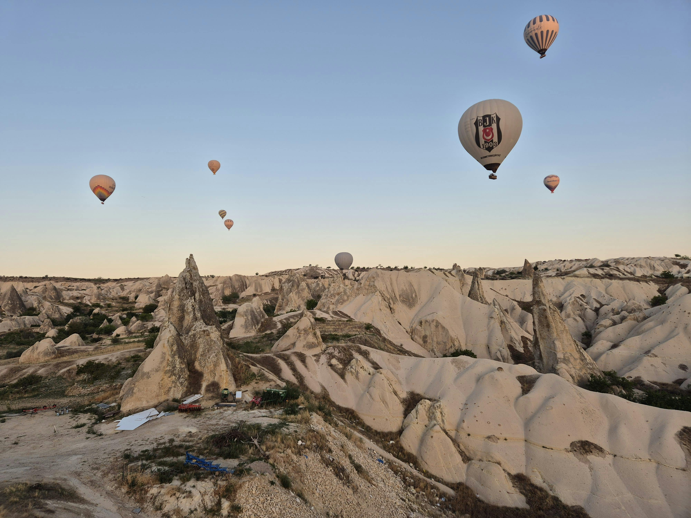

Havai
 Da agitação de Oahu ao romance de Maui, com passeios por caminhos pouco conhecidos de Lanai e Molokai, as ilhas havaianas oferecem muito para ver, fazer e sentir, enchendo uma vida inteira de sonhos.
Da agitação de Oahu ao romance de Maui, com passeios por caminhos pouco conhecidos de Lanai e Molokai, as ilhas havaianas oferecem muito para ver, fazer e sentir, enchendo uma vida inteira de sonhos.
A Capadócia fica na Turquia. Essa região é famosa por suas paisagens formadas por rochas vulcânicas, cidades subterrâneas e os impressionantes passeios de balão de ar quente, que proporcionam vistas deslumbrantes das "chaminés de fada" e vales da região.
Da agitação de Oahu ao romance de Maui, com passeios por caminhos pouco conhecidos de Lanai e Molokai, as ilhas havaianas oferecem muito para ver, fazer e sentir, enchendo uma vida inteira de sonhos.
 O título de Patrimônio Natural Mundial deve-se à importância do arquipélago para a vida marinha: suas águas garantem a reprodução e a alimentação do atum, tubarão, tartaruga e mamíferos marinhos, e abriga a maior concentração de aves tropicais marinhas do Oceano Atlântico.
O título de Patrimônio Natural Mundial deve-se à importância do arquipélago para a vida marinha: suas águas garantem a reprodução e a alimentação do atum, tubarão, tartaruga e mamíferos marinhos, e abriga a maior concentração de aves tropicais marinhas do Oceano Atlântico.